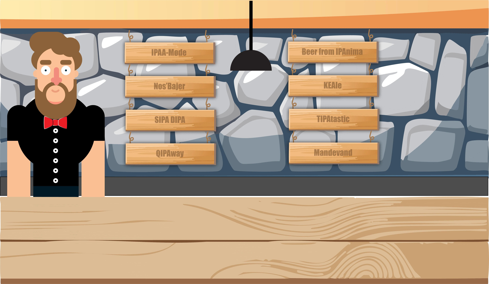
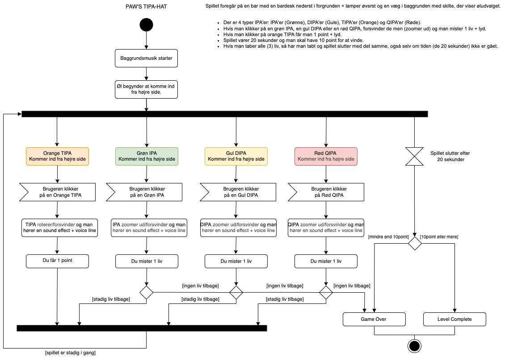
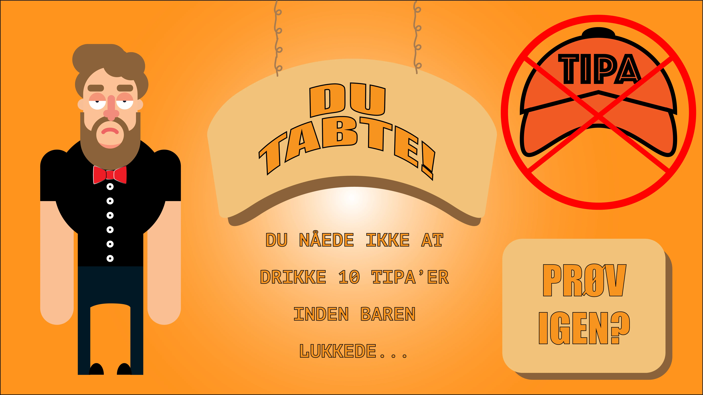
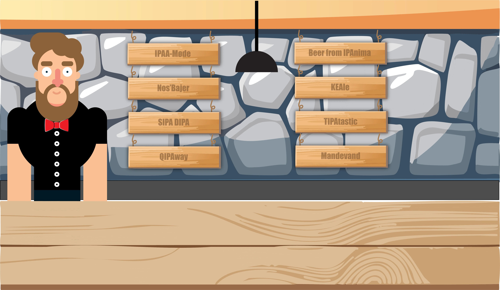
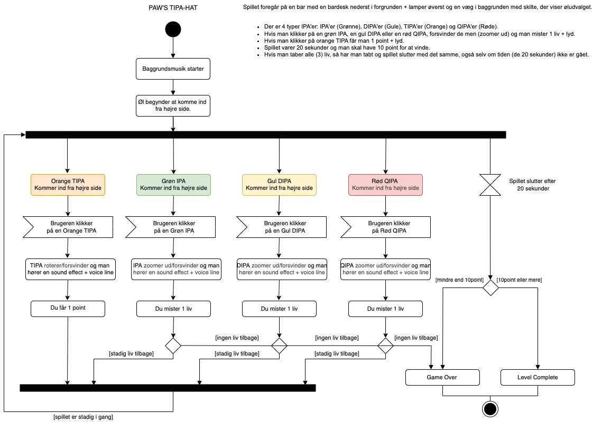
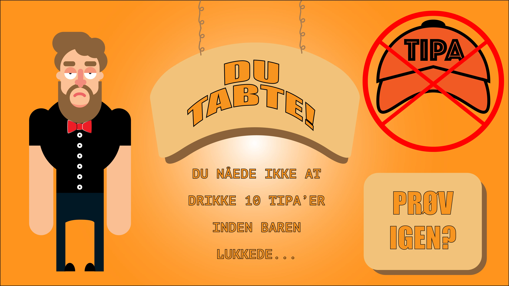

Animation - Spil: Paw’s TIPA Hat
Under næstsidste tema var fokusset at lave et spil opstillet af KEA.
Vi skulle først brainstorme os
frem
til
spillet ved at
tegne skitser og benytte os af post it notes.
Herefter lærte om at bruge adobe illustrator til at tegne og farve vores
indholdselementer, som fx baggrunde og gode/onde karakterer, der skulle indgå som vector grafik i
spillet.
Selve idéen kom meget let til mig, da spillet var baseret på min kollega, Paw, på baggrund af en
øludfording han engang
gav sig selv - det var perfekt til at spilmatisere over.
Efter udformningen af idéen fordybede vi os videre med css så vores grafik kunne animeres. Samtidig
med
dette lærte vi
programmeringsproget javascript så dé to sprog kunne snakke sammen i koden.
Vi lærte derfra at lave “aktivitets diagram” og “state machine diagram” for at vide
oversigtsmæssigt,
hvordan man helt
basalt vinder/taber i spillet, samt hvordan spillet skal kodes så det starter/stopper rigtigt, og
indlæse/resette alt
efter de automatisk eller interaktiv handlinger brugeren gør sig i spillet.
Mening med mit spil var at man skulle klikke på “TIPA-Dåserne”, der fjøl ind fra siden og undgå at
klikke på de andre
slags IPA-øltyper. Fik man 10 inden timer’en eller livet slap op, ville man vinde spillet.
Jeg færdiggjorde desværre aldrig mit spil da jeg under forløbet blev overfaldet og slået ned, der
forudsaget en stor
træthed og mangel på koncentration for mig. Derfor har jeg heller ikke et link til siden.
Swipe for at se screenshots fra projektet herunder:
 




